|
MFC
Exascale flow solver
|
|
MFC
Exascale flow solver
|
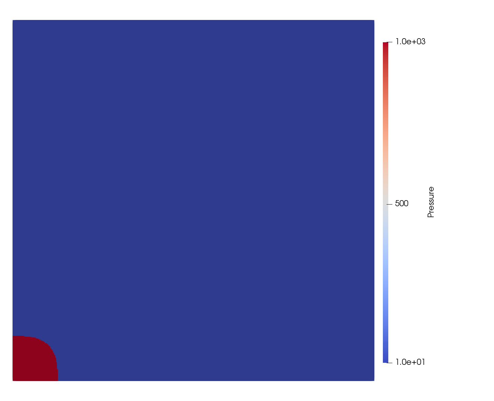
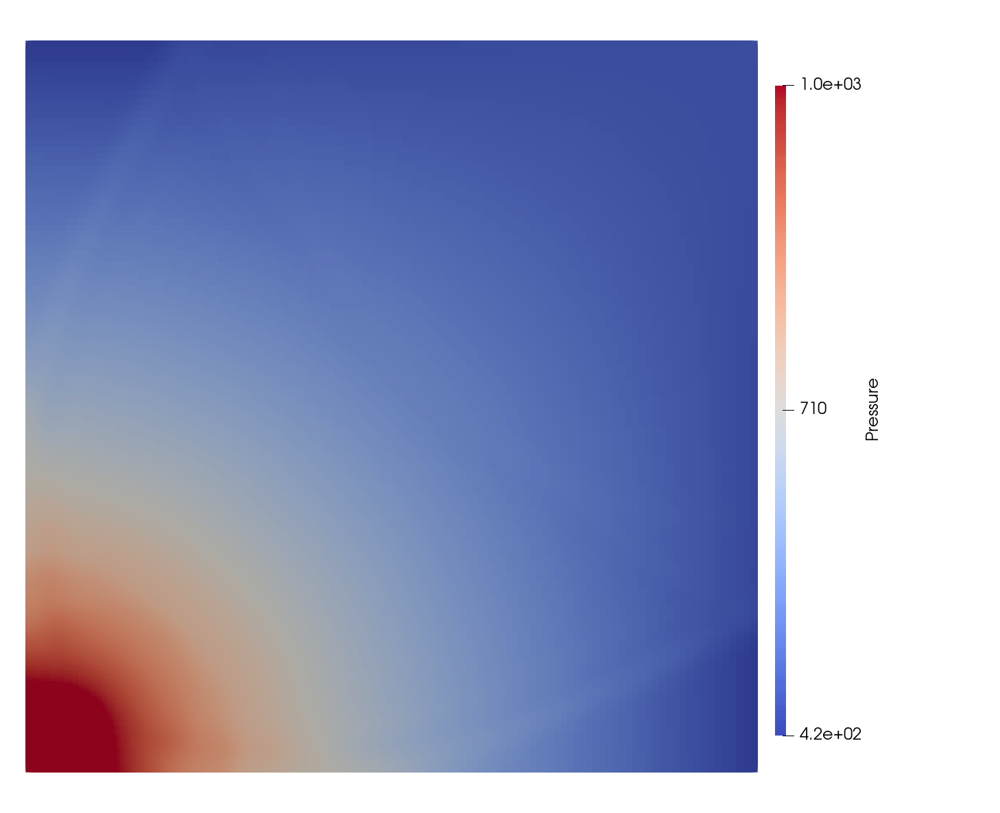
Reference: See Example 4.8.
A.S. Chamarthi, S.H. Frankel, A. Chintagunta, Implicit gradients based novel finite volume scheme for compressible single and multi-component flows, arXiv preprint arXiv:2106.01738 (2021).
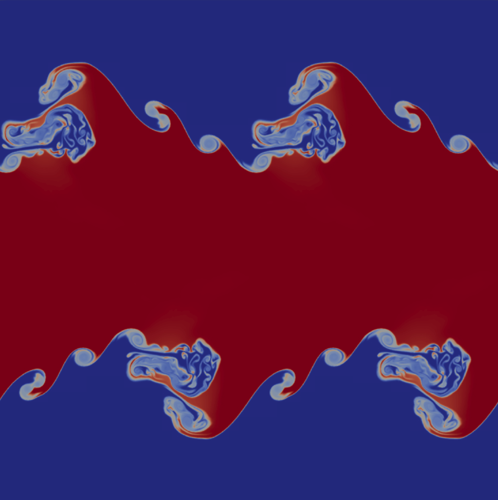
Reference:
Chamarthi, A., & Hoffmann, N., & Nishikawa, H., & Frankel S. (2023). Implicit gradients based conservative numerical scheme for compressible flows. arXiv:2110.05461
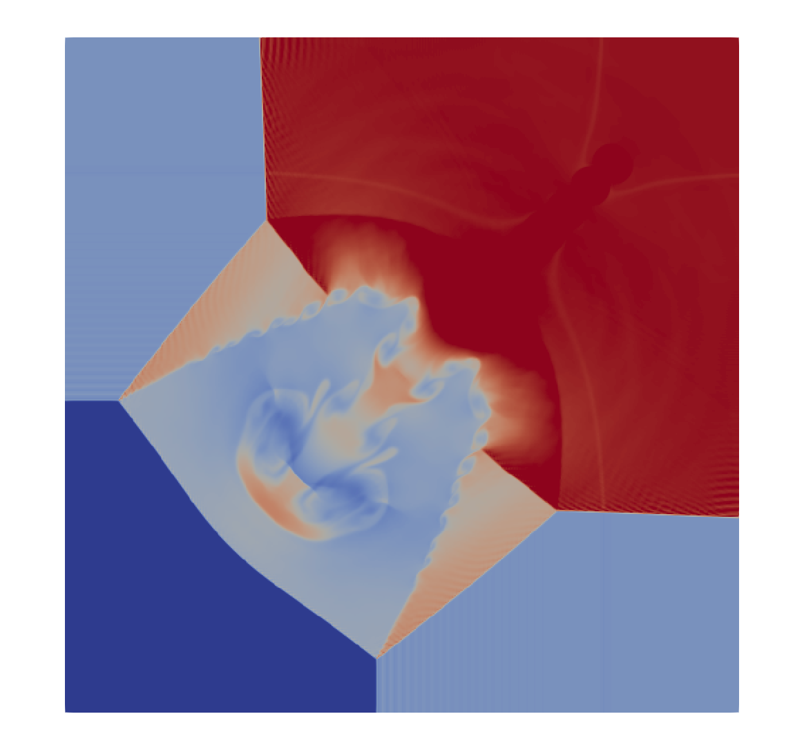
Reference:
C. W. Shu, S. Osher, Efficient implementation of essentially non-oscillatory shock-capturing schemes, Journal of Computational Physics 77 (2) (1988) 439–471. doi:10.1016/0021-9991(88)90177-5.
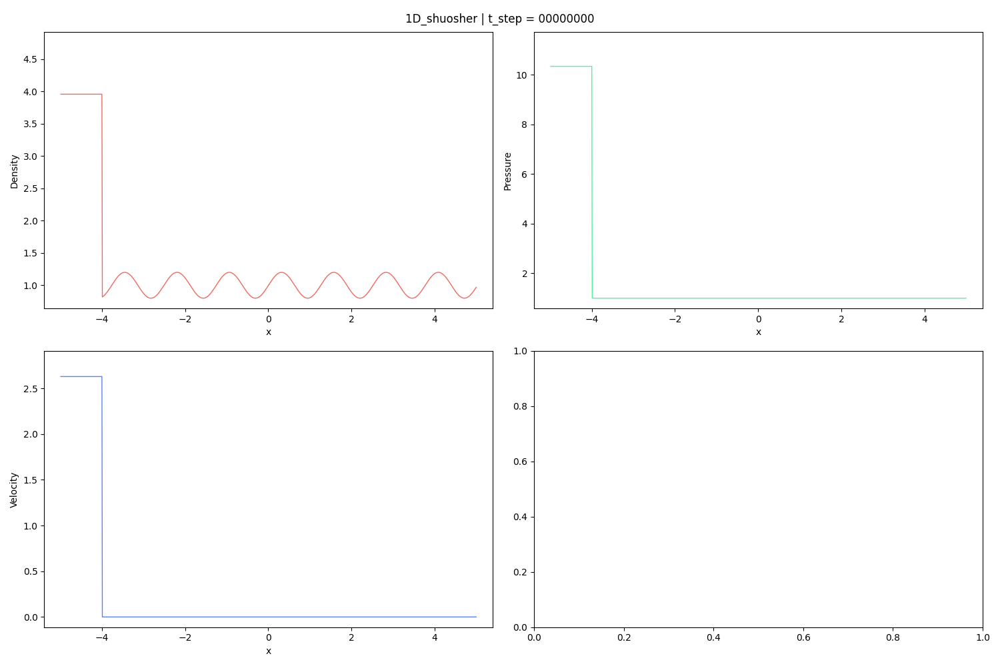
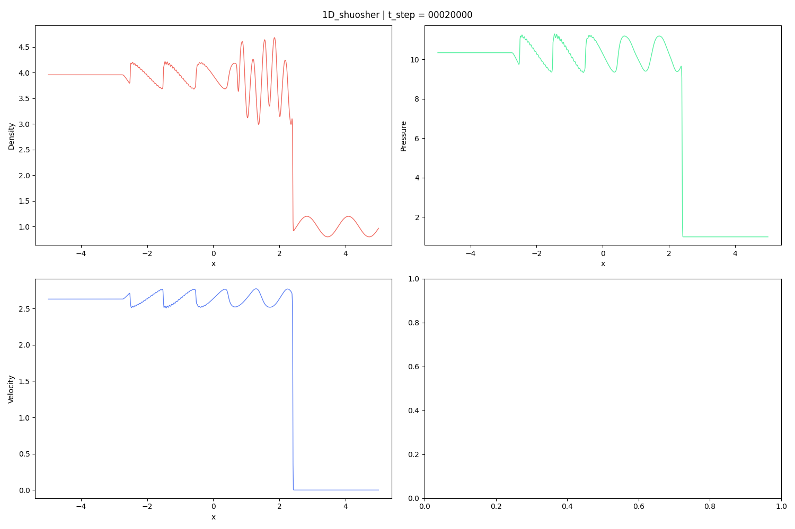
Validates the immersed boundary (IBM) + non-Newtonian viscosity interaction: the channel's no-slip walls are two rectangular IB slabs instead of domain boundary conditions, so the flow exercises the per-stencil-sample Herschel-Bulkley viscosity mu_eff used by the IBM ghost-point and force machinery (s_compute_viscous_stress_tensor in m_viscous.fpp, consumed by s_compute_ib_forces in m_ibm.fpp). Companion to examples/2D_poiseuille_thickening_nn, which validates the same fluid against the same analytic profile with BC walls.
Domain x in [0, 0.2] (periodic), y in [0, 0.3], grid m = 24, n = 95 (dy = 0.003125). Two rectangle IB slabs (patch_ibgeometry = 3, no-slip) bound the flow gap y in [0.05, 0.25] (half-height H = 0.1, centerline y_c = 0.15, 64 cells across the gap). Each slab extends beyond the domain in x and mostly outside the domain in y, so the only IB surface seen by the flow is its flat gap face; the slab centroids sit just inside the domain (a centroid exactly on the boundary is owned by no rank and its ib_state force record is never written). The domain BCs behind the slabs are no-slip walls (bc_y = -16), which keep the body-forced dead fluid inside the slabs benign. patch_ibmass = 0 so the reported IB force is the pure pressure+viscous volume integration (no bf_x*mass bookkeeping term); ib_state_wrt = T writes it at every save.
Fluid and forcing match the BC-walled template (single Papanastasiou-regularized Herschel-Bulkley fluid, no yield stress):
| Parameter | Value | Role |
|---|---|---|
| fluid_pp(1)K | 5.0e-2 | consistency index |
| fluid_pp(1)nn | 1.5 | flow index > 1 -> shear-thickening |
| fluid_pp(1)tau0 | 0.0 | no yield stress (pure power law) |
| fluid_pp(1)hb_m | 1000.0 | Papanastasiou regularization parameter |
| fluid_pp(1)mu_min/mu_max | 1e-6 / 0.035 | viscosity clamp (~1.5x mu_wall = 0.0232, clamp inactive) |
Driven by g_x = 5e-2, rho = 1, pres = 10 (Mach ~3e-3); cfl_adap_dt with cfl_target = 0.3 to t_stop = 0.9 (~2 wall-viscous diffusion times).
In the gap the steady fully-developed power-law profile is
u(y) = (n/(n+1)) * (rho*g/K)^(1/n) * ( H^((n+1)/n) - |y - y_c|^((n+1)/n) )
and the steady x-force per wall per unit depth is tau_w * L_x with tau_w = rho*g*H = 5e-3.
./mfc.sh run examples/2D_ibm_poiseuille_nn/case.py -n 2 ./build/venv/bin/python3 examples/2D_ibm_poiseuille_nn/compare_analytic.py
(~2.5 min on 2 CPU ranks.) For the n = 1 equivalence check, run the newtonian and nn1 modes into two scratch copies and compare:
for MODE in newtonian nn1; do
mkdir -p build/ibm_nn_equiv/$MODE
cp examples/2D_ibm_poiseuille_nn/case.py build/ibm_nn_equiv/$MODE/
IBM_NN_MODE=$MODE ./mfc.sh run build/ibm_nn_equiv/$MODE/case.py -n 2
done
./build/venv/bin/python3 examples/2D_ibm_poiseuille_nn/check_equivalence.py \
build/ibm_nn_equiv/newtonian build/ibm_nn_equiv/nn1
A — n = 1 Newtonian equivalence (IBM mu_eff degeneracy). A power-law fluid with nn = 1, tau0 = 0, K = 0.02 is analytically the same fluid as a Newtonian one with mu = 0.02. Running both modes with the same fixed dt = 6e-5 to t = 0.3 gives bitwise identical velocity fields (max abs and rel L2 difference 0.0) and bitwise identical IBM-integrated wall forces — the non-Newtonian IBM path reduces exactly to the Newtonian one.
B — analytic power-law profile (n = 1.5). Relative L2 error of the steady x-averaged gap profile vs. the analytic solution: 5.8% with the nominal H = 0.1 (slab faces), 2.6% with H = 0.1016 fitted from the u -> 0 crossings (IBM walls are sharp only to ~half a cell; the fitted walls sit ~dy/2 = 0.0016 outside the faces). Steady-state drift between the last two saves 2.0e-3; profile bluntness (mean/peak) 0.640 vs. the n = 1.5 theory 0.625 (parabola 0.667), confirming the pointed shear-thickening profile. The BC-walled template achieves 1.46% on the same fluid; the extra error is the diffuse-wall representation, not the viscosity model.
C — IBM-integrated wall force. The volume-integrated x-force converges to 8.05e-4 per wall (both walls identical by symmetry; plateaued by t = 0.9) vs. the analytic tau_w*L_x = 1.0e-3 — a ratio of 0.80. The deficit is the known coarseness of the volume-integration force estimator (second-order finite differences of ghost/dead-cell states inside the body), not the viscosity model: in Validation A the same integral is bitwise identical between the Newtonian and non-Newtonian code paths.
Reference:
Bezgin, D. A., & Buhendwa A. B., & Adams N. A. (2022). JAX-FLUIDS: A fully-differentiable high-order computational fluid dynamics solver for compressible two-phase flows. arXiv:2203.13760
Ghia, U., & Ghia, K. N., & Shin, C. T. (1982). High-re solutions for incompressible flow using the Navier-Stokes equations and a multigrid method. Journal of Computational Physics, 48, 387-411
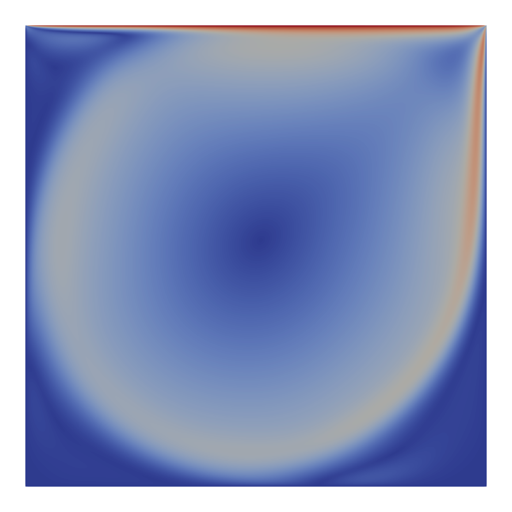
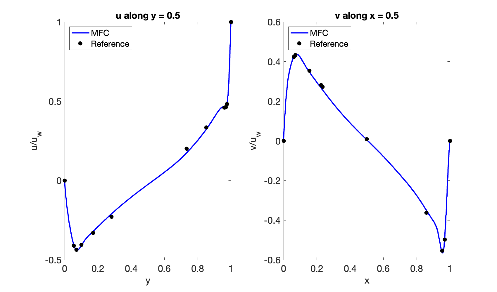
Reference: See Example 4.13.
A.S. Chamarthi, S.H. Frankel, A. Chintagunta, Implicit gradients based novel finite volume scheme for compressible single and multi-component flows, arXiv preprint arXiv:2106.01738 (2021)., see Example 4.13
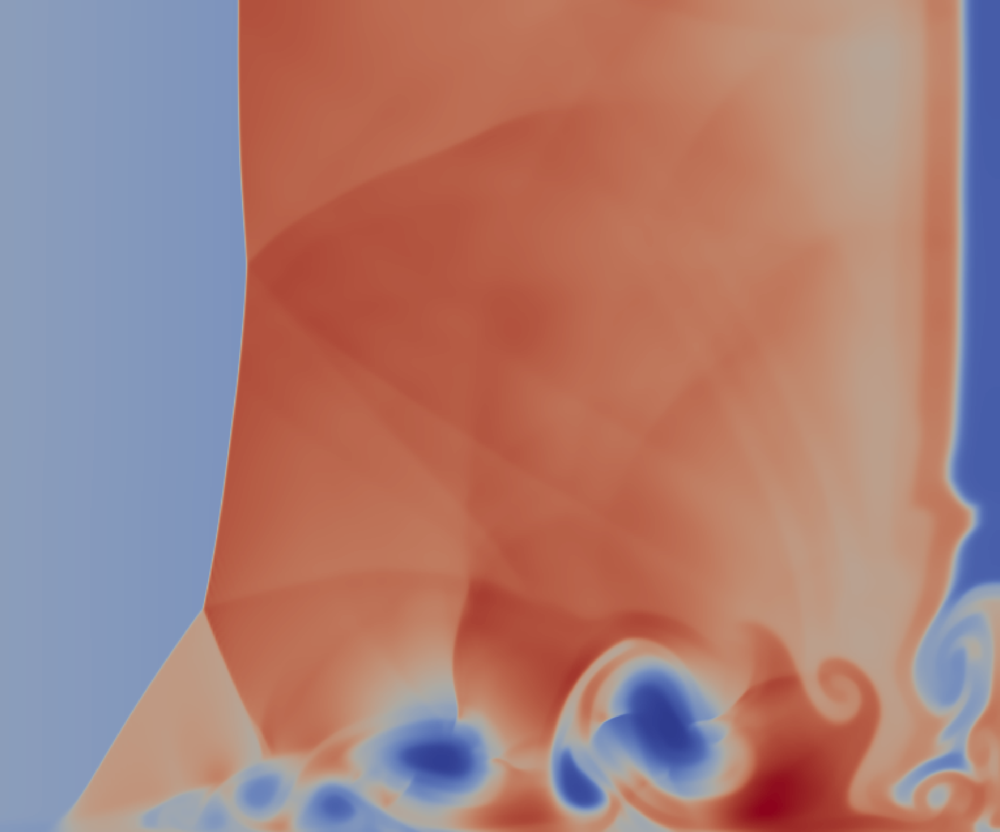
Validates the yield-stress term of MFC's Herschel-Bulkley non-Newtonian viscosity against a closed-form analytic Poiseuille profile. Demonstrates the Bingham regime (nn = 1, tau0 > 0): a rigid plug of uniform velocity forms near the centerline, where the shear stress falls below the yield stress.
Single Papanastasiou-regularized Herschel-Bulkley fluid with unit flow index, so K = mu is a plain Newtonian consistency and the only non-Newtonian effect is the yield stress:
| Parameter | Value | Role |
|---|---|---|
| fluid_pp(1)K | 5.0e-2 | n = 1 -> plain dynamic viscosity mu |
| fluid_pp(1)nn | 1.0 | flow index = 1 (Bingham, no power-law) |
| fluid_pp(1)tau0 | 4.0e-3 | yield stress -> plug half-width y0 = 0.4 H |
| fluid_pp(1)hb_m | 1.0e4 | sharp Papanastasiou yield regularization |
| fluid_pp(1)mu_min/mu_max | 1e-6 / 1.0 | viscosity clamp (rigid plug) |
Driven by g_x = 0.1, rho = 1, pres = 10, giving tau_w = rho*g*H = 1e-2, u_plug ~ 3.6e-3 and Mach ~1e-3. Channel L_y = 0.2, H = 0.1, no-slip walls, periodic in x.
The shear stress is tau = rho*g*(H - y); the fluid only flows where |tau| > tau0. With n = 1, K = mu, tau_w = rho*g*H > tau0:
plug half-width : y0 = tau0/(rho*g)
sheared region : u(y) = (1/(2*mu*rho*g)) *
[ (tau_w - tau0)^2 - (rho*g*(H-y) - tau0)^2 ] (|y-H| >= y0)
plug : u_plug = (1/(2*mu*rho*g)) * (tau_w - tau0)^2 (|y-H| < y0)
The signature of a correct yield term is the flat plug of uniform velocity within |y - H| < y0. Requires tau_w > tau0 for any flow.
./mfc.sh run examples/2D_bingham_poiseuille_nn/case.py -n 2 python examples/2D_bingham_poiseuille_nn/compare_analytic.py
Relative L2 error vs. the analytic Bingham profile: 2.5% (2-rank run, steady state confirmed). A plug forms at the centerline with half-width matching the analytic y0 = tau0/(rho*g) = 0.4 H.
Validates the power-law term of MFC's Herschel-Bulkley non-Newtonian viscosity against a closed-form analytic Poiseuille profile, in the shear-**thickening** regime (nn > 1): the velocity profile is more pointed (sharper-topped) than a parabola. Companion to examples/2D_poiseuille_nn (shear-thinning, nn = 0.7).
Single Papanastasiou-regularized Herschel-Bulkley fluid with no yield stress (tau0 = 0), so the effective viscosity is the pure power law mu = K*gamma_dot^(n-1), clamped to [mu_min, mu_max]:
| Parameter | Value | Role |
|---|---|---|
| fluid_pp(1)K | 5.0e-2 | consistency index |
| fluid_pp(1)nn | 1.5 | flow index > 1 -> shear-thickening |
| fluid_pp(1)tau0 | 0.0 | no yield stress (pure power law) |
| fluid_pp(1)hb_m | 1000.0 | Papanastasiou regularization parameter |
| fluid_pp(1)mu_min/mu_max | 1e-6 / 0.035 | viscosity clamp |
Driven by a constant body acceleration g_x = 5e-2, rho = 1, pres = 10 (sound speed ~3.74), giving u_max ~ 0.013 and Mach ~3e-3 (effectively incompressible). Channel L_y = 0.2, half-height H = L_y/2 = 0.1, no-slip walls at y = 0, L_y, periodic in x. Grid m = 24 (x), n = 63 (y).
For n > 1 the maximum physical viscosity is at the wall (highest shear rate), mu_wall = K^(1/n) * (rho*g*H)^((n-1)/n) = 0.0232. mu_max = 0.035 ~ 1.5*mu_wall sits just above that maximum, so the clamp never activates (the analytic profile stays exact everywhere) while keeping the explicit viscous timestep large — the timestep scales as 1/mu_max, so set mu_max just above the physical maximum viscosity.
Fully-developed steady channel flow balances the body force against the shear stress, tau = rho*g*(H - y). With tau = K*|du/dy|^n (power law) the closed form is
u(y) = (n/(n+1)) * (rho*g/K)^(1/n) * ( H^((n+1)/n) - |y - H|^((n+1)/n) )
(n < 1 blunt/flat-topped; n = 1 parabola; n > 1 pointed). For n > 1 the effective viscosity mu = K*gamma_dot^(n-1) -> 0 at the shear-free centerline (rather than diverging as for n < 1), so no regularization cap is needed and the analytic profile is an exact reference everywhere.
./mfc.sh run examples/2D_poiseuille_thickening_nn/case.py -n 2 python examples/2D_poiseuille_thickening_nn/compare_analytic.py
The run reaches t_stop = 0.9 (~2 wall-viscous diffusion times) in ~1 min on 2 CPU ranks with dt = 8.4e-5.
Relative L2 error vs. the analytic power-law profile: 1.46% (2-rank run, steady-state drift between the last two saves 3.9e-3). The local momentum balance K*|du/dy|^n = rho*g*(H-y) holds to ~1.4% across the channel, and the profile bluntness (mean/peak = 0.626) matches the n = 1.5 theory (n+1)/(2n+1) = 0.625, confirming the pointed shear-thickening profile. u_max = 1.288e-2 matches the analytic 1.291e-2, confirming the clamp stays inactive.
Validates the power-law term of MFC's Herschel-Bulkley non-Newtonian viscosity against a closed-form analytic Poiseuille profile. Demonstrates the shear-thinning regime (nn < 1): the velocity profile is blunter (flatter-topped) than a parabola.
Single Papanastasiou-regularized Herschel-Bulkley fluid with no yield stress (tau0 = 0), so the effective viscosity is the pure power law mu = K*gamma_dot^(n-1), clamped to [mu_min, mu_max]:
| Parameter | Value | Role |
|---|---|---|
| fluid_pp(1)K | 2.0e-2 | consistency index |
| fluid_pp(1)nn | 0.7 | flow index < 1 -> shear-thinning |
| fluid_pp(1)tau0 | 0.0 | no yield stress (pure power law) |
| fluid_pp(1)hb_m | 1000.0 | Papanastasiou regularization parameter |
| fluid_pp(1)mu_min/mu_max | 1e-6 / 10.0 | viscosity clamp |
Driven by a constant body acceleration g_x = 8e-2, rho = 1, pres = 10 (sound speed ~3.74), giving u_max ~ 0.011 and Mach ~3e-3 (effectively incompressible). Channel L_y = 0.2, half-height H = L_y/2 = 0.1, no-slip walls at y = 0, L_y, periodic in x.
Fully-developed steady channel flow balances the body force against the shear stress, tau = rho*g*(H - y). With tau = K*|du/dy|^n (power law) the closed form is
u(y) = (n/(n+1)) * (rho*g/K)^(1/n) * ( H^((n+1)/n) - |y - H|^((n+1)/n) )
(n < 1 blunt/flat-topped; n = 1 parabola; n > 1 pointed). For n < 1 the viscosity diverges at the shear-free centerline, so any regularized solver caps it there; the near-wall momentum balance K*|du/dy|^n = rho*g*(H-y) is the cleanest pointwise correctness test and holds regardless of the cap.
./mfc.sh run examples/2D_poiseuille_nn/case.py -n 2 python examples/2D_poiseuille_nn/compare_analytic.py
Relative L2 error vs. the analytic power-law profile: 0.68% (2-rank run, steady state confirmed). The local momentum balance holds to ~0.1% across the channel, and the profile bluntness (mean/peak = 0.706) matches the n = 0.7 theory (n+1)/(2n+1) = 0.708.
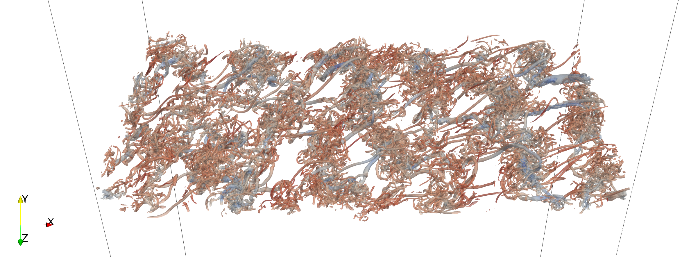
Reference:
G. B. Skinner and G. H. Ringrose, “Ignition Delays of a Hydrogen—Oxygen—Argon Mixture at Relatively Low Temperatures”, J. Chem. Phys., vol. 42, no. 6, pp. 2190–2192, Mar. 1965. Accessed: Oct. 13, 2024.
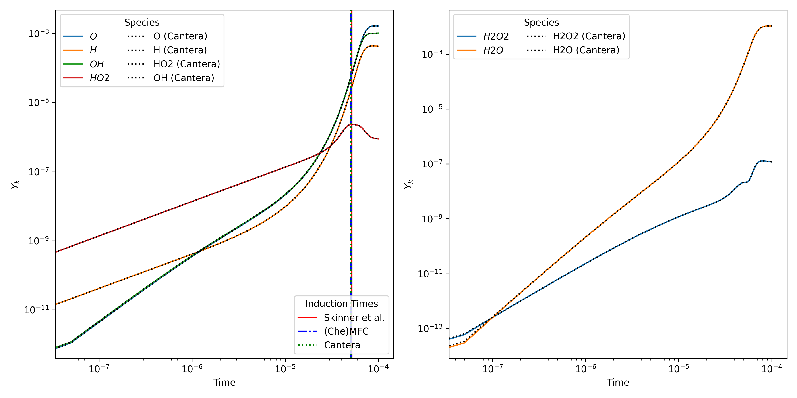
After running the simulation, compare MFC species mass fractions and induction time against a Cantera 0-D ideal-gas reactor reference:
This reads the Silo output, runs an equivalent Cantera reactor, prints the induction times (Skinner et al. / Cantera / (Che)MFC), and saves plots-nD_perfect_reactor-example.png. All dependencies are installed automatically by the MFC toolchain.
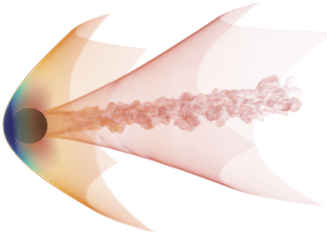
Reference:
Hillewaert, K. (2013). TestCase C3.5 - DNS of the transition of the Taylor-Green vortex, Re=1600 - Introduction and result summary. 2nd International Workshop on high-order methods for CFD.
This figure shows the isosurface with zero q-criterion.
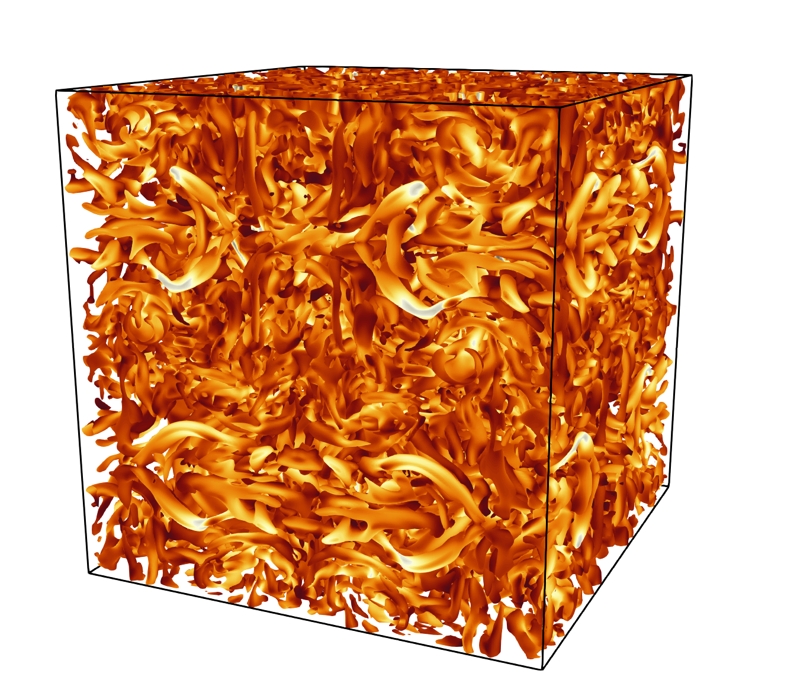
Reference:
V. A. Titarev, E. F. Toro, Finite-volume WENO schemes for three-dimensional conservation laws, Journal of Computational Physics 201 (1) (2004) 238–260.
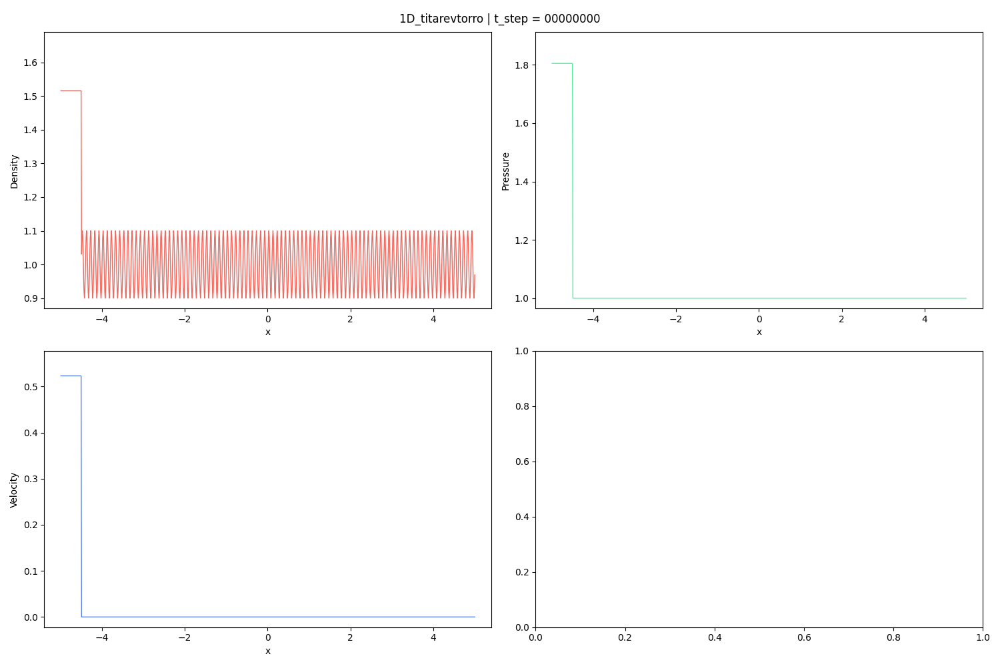
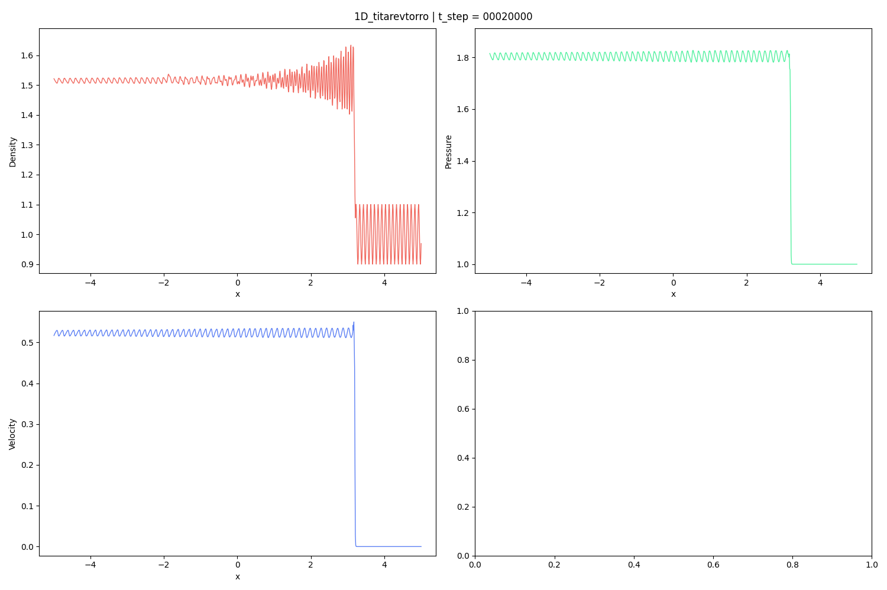
Qualitative demonstration of MFC's Herschel-Bulkley non-Newtonian viscosity in a recirculating flow. A shear-thinning fluid fills a unit square cavity driven by a moving top lid. Unlike the Poiseuille examples, this case has no closed-form analytic solution — it is a qualitative demonstration of the expected shear-thinning trend (a primary vortex center shifted toward the moving lid, with stronger near-wall velocity gradients relative to the Newtonian case).
Two identical Papanastasiou-regularized Herschel-Bulkley fluids (a two-fluid setup sharing one rheology), pure power law (tau0 = 0):
| Parameter | Value | Role |
|---|---|---|
| fluid_pp(i)K | 1.0e-2 | consistency index; Re_eff = 1/K = 100 at unit shear rate |
| fluid_pp(i)nn | 0.5 | flow index < 1 -> shear-thinning |
| fluid_pp(i)tau0 | 0.0 | no yield stress (pure power law) |
| fluid_pp(i)hb_m | 1000.0 | Papanastasiou regularization parameter |
| fluid_pp(i)mu_min/mu_max | 1e-6 / 1.0 | viscosity clamp |
Unit square [0,1]^2, m = n = 99 (coarse smoke-run grid), all walls no-slip with the top lid moving at bc_yve1 = 0.5. Effective Reynolds number Re_eff = 1/K = 100 at unit shear rate; the conventional lid-based Reynolds number rho*U*L/mu(1) = 0.5/1e-2 = 50 with U = 0.5 and mu(1) = K.
The auto-registered CI test of this example is truncated to 50 time steps and serves as smoke coverage only, not a physics anchor.
Incompressible recirculating cavity flow with the shear-dependent power-law viscosity mu = K*gamma_dot^(n-1). With n < 1 the fluid thins under the strong shear beneath the lid and in the corner boundary layers, while the slow cavity core stays comparatively viscous.
What to look for (qualitative, no analytic match): a primary recirculating vortex whose center, relative to a Newtonian cavity at the same Reynolds number, is shifted toward the moving lid, with stronger near-wall velocity gradients — the expected shear-thinning trend. Do not expect a quantitative error; the committed grid (m = n = 99) is intentionally coarse. For quantitative comparison use m = n = 499 or finer with a longer t_step_stop.
./mfc.sh run examples/2D_lid_driven_cavity_nn/case.py -n 2
Post-process and inspect the velocity / vorticity (omega_wrt(3)) fields; there is no compare_analytic.py for this qualitative case.
Reference: See Example 4.18.
A.S. Chamarthi, S.H. Frankel, A. Chintagunta, Implicit gradients based novel finite volume scheme for compressible single and multi-component flows, arXiv preprint arXiv:2106.01738 (2021).
Reference:
Woodward, P. (1984). The numerical simulation of two-dimensional fluid flow with strong shocks. Journal of Computational Physics, 54(1), 115–173. https://doi.org/10.1016/0021-9991(84)90140-2
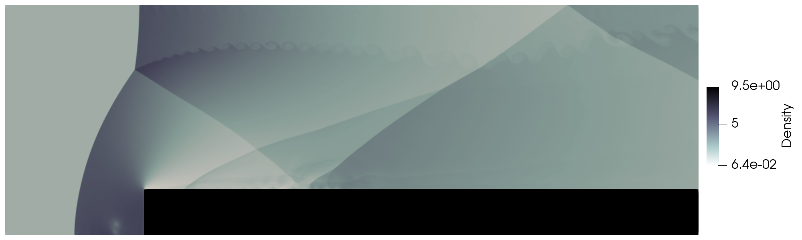
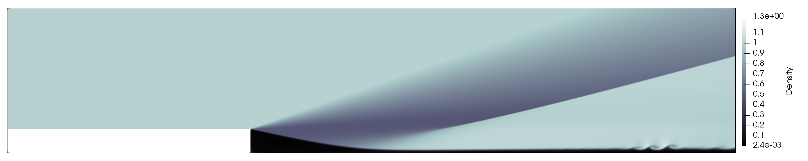
The scaling case can exercise both weak- and strong-scaling. It adjusts itself depending on the number of requested ranks.
This directory also contains a collection of scripts used to test strong and weak scaling on OLCF Frontier.
Pass --scaling weak. The --memory option controls (approximately) how much memory each rank should use, in Gigabytes. The number of cells in each dimension is then adjusted according to the number of requested ranks and an approximation for the relation between cell count and memory usage. The problem size increases linearly with the number of ranks.
Pass --scaling strong. The --memory option controls (approximately) how much memory should be used in total during simulation, across all ranks, in Gigabytes. The problem size remains constant as the number of ranks increases.
For example, to run a weak-scaling test that uses ~4GB of GPU memory per rank on 8 2-rank nodes with case optimization, one could:
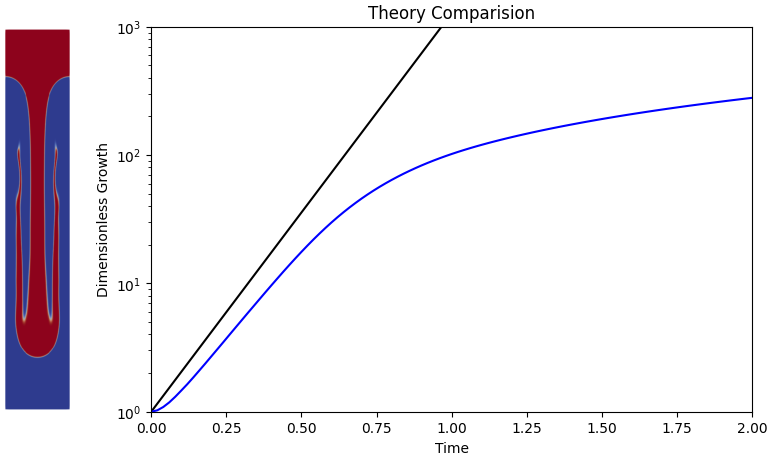
Reference:
Coralic, V., & Colonius, T. (2014). Finite-volume Weno scheme for viscous compressible multicomponent flows. Journal of Computational Physics, 274, 95–121. https://doi.org/10.1016/j.jcp.2014.06.003
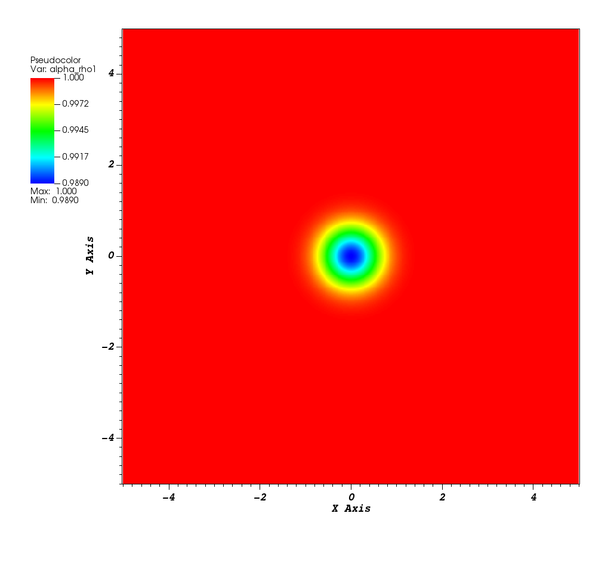
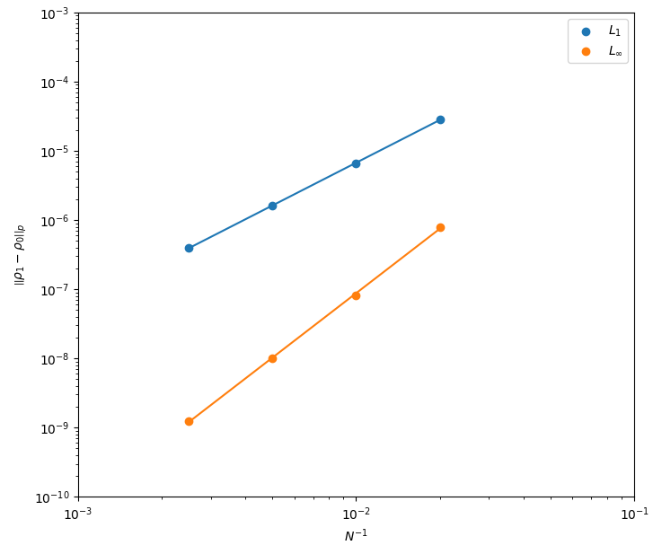
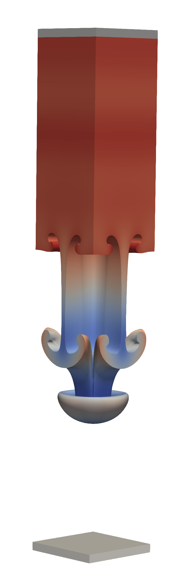
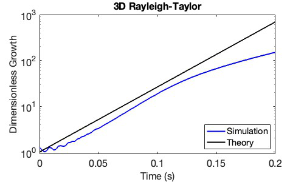
Validates the combined non-Newtonian terms of MFC's Herschel-Bulkley viscosity against a closed-form analytic Poiseuille profile: a shear-thinning power law (nn = 0.5 < 1) and a yield stress (tau0 > 0) acting together. The companion examples isolate each effect — 2D_poiseuille_nn / 2D_poiseuille_thickening_nn (power-law only, tau0 = 0) and 2D_bingham_poiseuille_nn (yield only, nn = 1). The signature of a correct general Herschel-Bulkley model is a rigid plug near the centerline (where |tau| < tau0) joined to a shear-thinning sheared profile at the walls.
Single Papanastasiou-regularized Herschel-Bulkley fluid with both a sub-unity flow index and a finite yield stress:
| Parameter | Value | Role |
|---|---|---|
| fluid_pp(1)K | 1.5e-2 | consistency index |
| fluid_pp(1)nn | 0.5 | flow index < 1 -> shear-thinning |
| fluid_pp(1)tau0 | 3.5e-3 | yield stress -> plug half-width y0 = 0.35 H |
| fluid_pp(1)hb_m | 1.0e4 | sharp Papanastasiou yield regularization |
| fluid_pp(1)mu_min/mu_max | 1e-6 / 0.3 | viscosity clamp (rigid plug) |
Driven by g_x = 0.1, rho = 1, pres = 10, giving tau_w = rho*g*H = 1e-2, u_plug ~ 4e-3 and Mach ~1e-3. Channel L_y = 0.2, H = 0.1, no-slip walls, periodic in x. Grid m = 24 (x), n = 63 (y).
The plug viscosity diverges as the shear rate -> 0, so the clamp mu_max sets the plug rigidity. mu_max = 0.3 (~6x the wall effective viscosity) keeps a clear plug while keeping the explicit viscous timestep dt ~ dy^2 rho/mu_max tractable: dt scales as 1/mu_max, so set mu_max just above the physical maximum required.
The shear stress is tau = rho*g*(H - y); the fluid only flows where |tau| > tau0. With tau = tau0 + K*|du/dy|^n and tau_w = rho*g*H > tau0:
plug half-width : y0 = tau0/(rho*g)
sheared region : u(y) = (n/((n+1)*rho*g)) * K^(-1/n) *
[ (tau_w - tau0)^((n+1)/n)
- (rho*g*(H-y) - tau0)^((n+1)/n) ] (|y-H| >= y0)
plug : u_plug = (n/((n+1)*rho*g)) * K^(-1/n) *
(tau_w - tau0)^((n+1)/n) (|y-H| < y0)
(upper half mirrors about y = H). Requires tau_w > tau0 for any flow.
./mfc.sh run examples/2D_herschel_bulkley_poiseuille_nn/case.py -n 2 python examples/2D_herschel_bulkley_poiseuille_nn/compare_analytic.py
The run reaches t_stop = 0.4 in ~5 min on 2 CPU ranks with dt ~ 1e-5.
Relative L2 error vs. the analytic Herschel-Bulkley profile: 3.8% (2-rank run, steady-state drift between the last two saves ~1.1%). The sheared-region momentum balance K*|du/dy|^n + tau0 = rho*g*(H-y) holds to ~1% near the walls. A flat plug forms at the centerline: because the Papanastasiou plug is regularized (not perfectly rigid), the strict >=99% u_max band understates it, but the >=95% u_max plug half-width = 0.0359 = 1.03 y0, matching the analytic y0 = tau0/(rho*g) = 0.035 = 0.35 H.
Reference:
P. J. Martínez Ferrer, R. Buttay, G. Lehnasch, and A. Mura, “A detailed verification procedure for compressible reactive multicomponent Navier–Stokes solvers”, Computers & Fluids, vol. 89, pp. 88–110, Jan. 2014. Accessed: Oct. 13, 2024. [Online]. Available: https://doi.org/10.1016/j.compfluid.2013.10.014
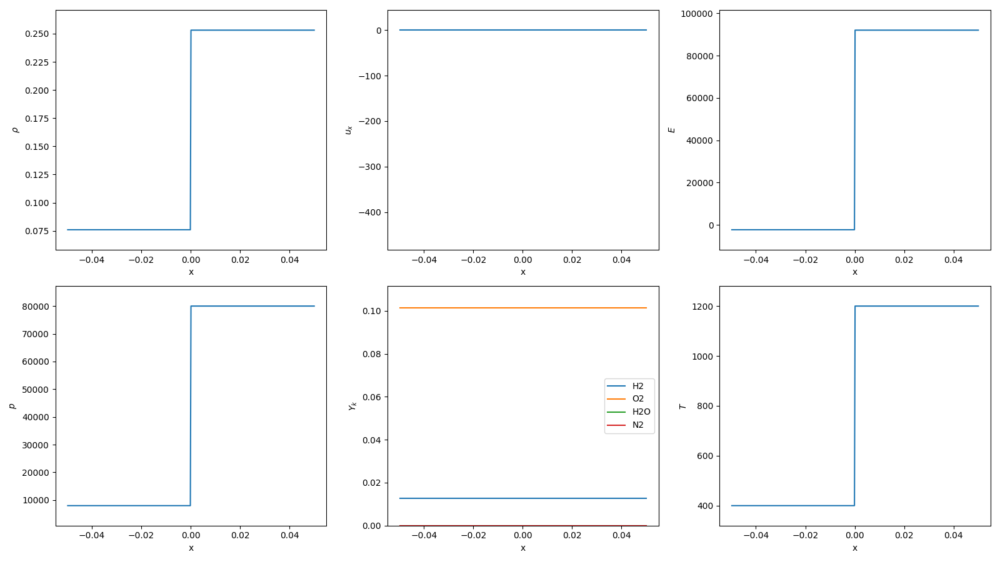
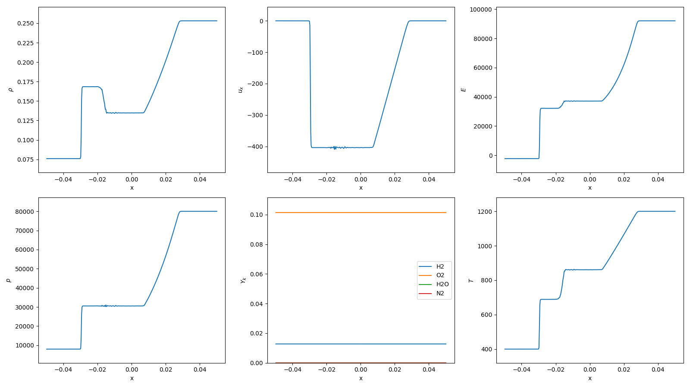
References:
P. J. Martínez Ferrer, R. Buttay, G. Lehnasch, and A. Mura, “A detailed verification procedure for compressible reactive multicomponent Navier–Stokes solvers”, Computers & Fluids, vol. 89, pp. 88–110, Jan. 2014. Accessed: Oct. 13, 2024. [Online]. Available: https://doi.org/10.1016/j.compfluid.2013.10.014
H. Chen, C. Si, Y. Wu, H. Hu, and Y. Zhu, “Numerical investigation of the effect of equivalence ratio on the propagation characteristics and performance of rotating detonation engine”, Int. J. Hydrogen Energy, Mar. 2023. Accessed: Oct. 13, 2024. [Online]. Available: https://doi.org/10.1016/j.ijhydene.2023.03.190
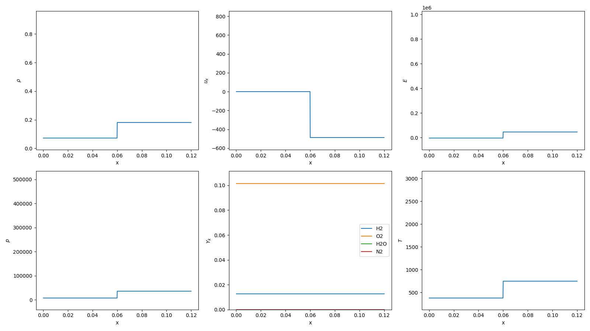
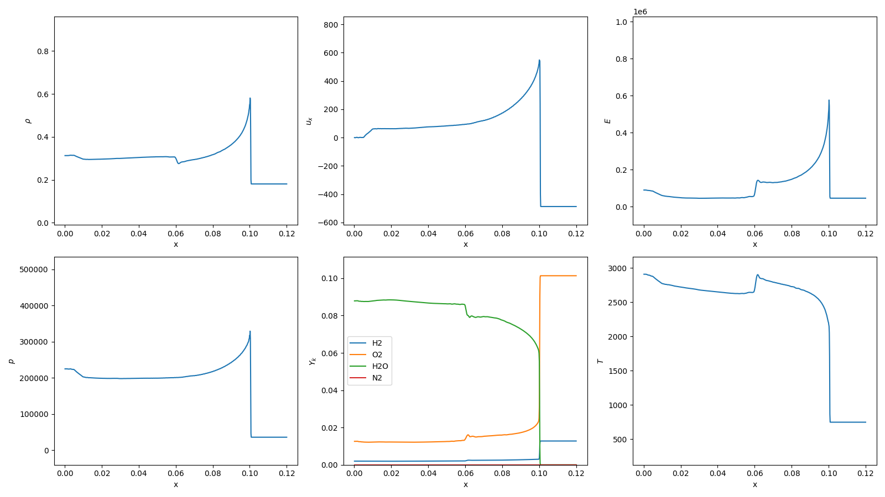
Reference:
Trojak, W., & Dzanic, T. Positivity-preserving discoutinous spectral element method for compressible multi-species flows. arXiv:2308.02426
Reference:
P. D. Lax, Weak solutions of nonlinear hyperbolic equations and their numerical computation, Communications on pure and applied mathematics 7 (1) (1954) 159–193.
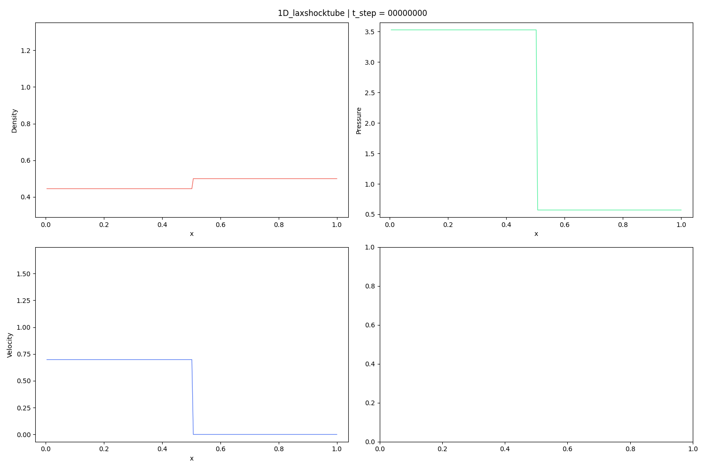
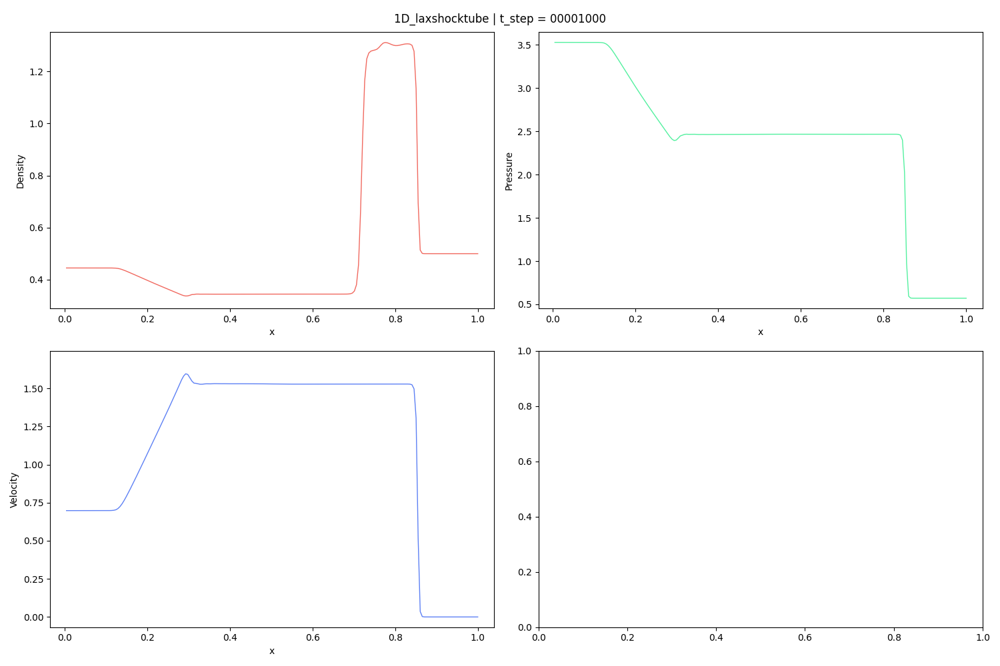
Reference:
Panchal et. al., A Seven-Equation Diffused Interface Method for Resolved Multiphase Flows, JCP, 475 (2023)
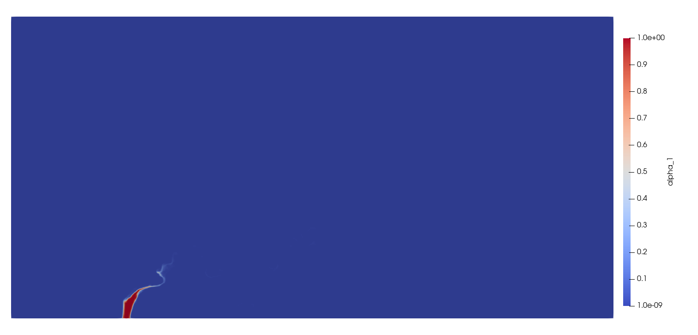
This example case contains an automated convergence test using a 1D, two-component advection case. The case can be run by executing the bash script ./submitJobs.sh in a terminal after enabling execution permissions with chmod +x ./submitJobs.sh and setting the ROOT_DIR and MFC_DIR variables. By default the script runs the case for 6 different grid resolutions with 1st, 3rd, and 5th, order spatial reconstructions. These settings can be modified by editing the variables at the top of the script. You can also run different model equations by setting the ME variable and different Riemann solvers by setting the RS variable.
Once the simulations have been run, you can generate convergence plots with matplotlib by running python3 plot.py in a terminal. This will generate plots of the L1, L2, and Linf error norms and save the results to errors.csv.